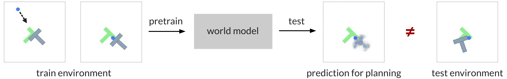
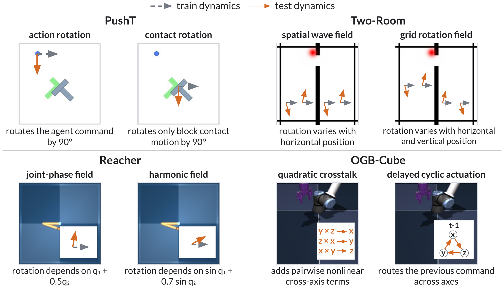
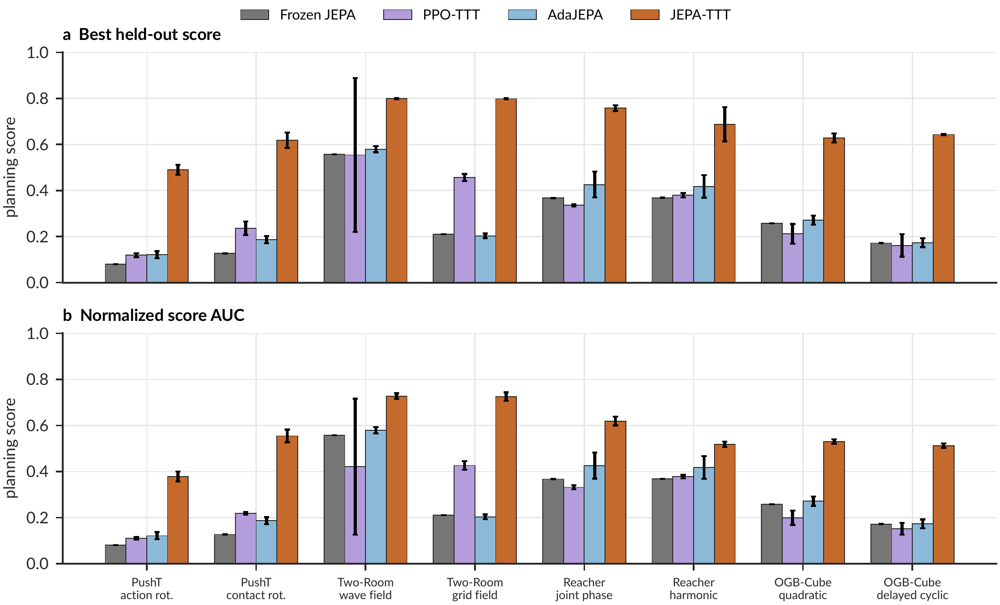
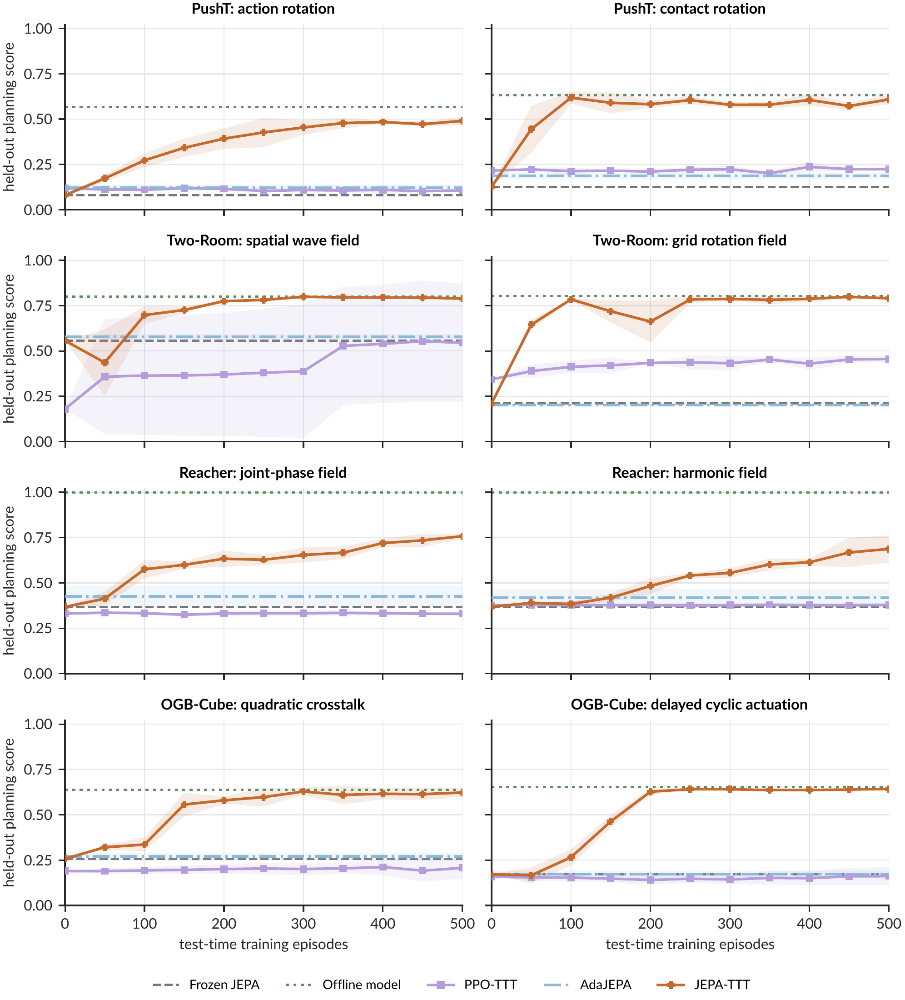
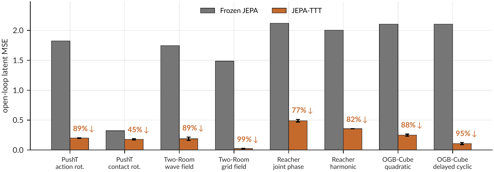
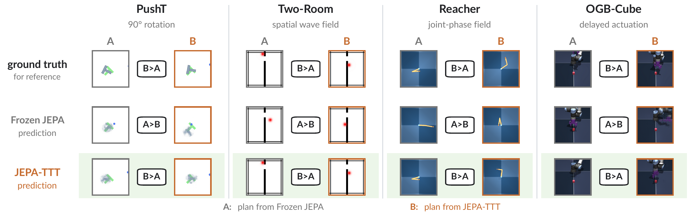
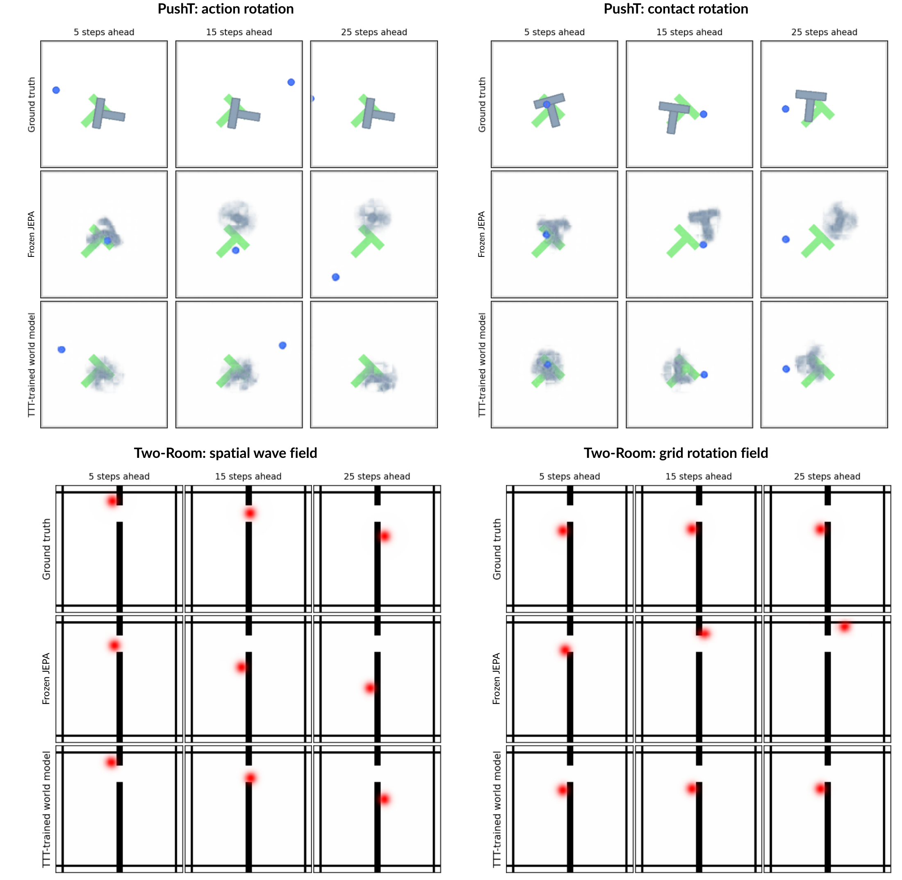
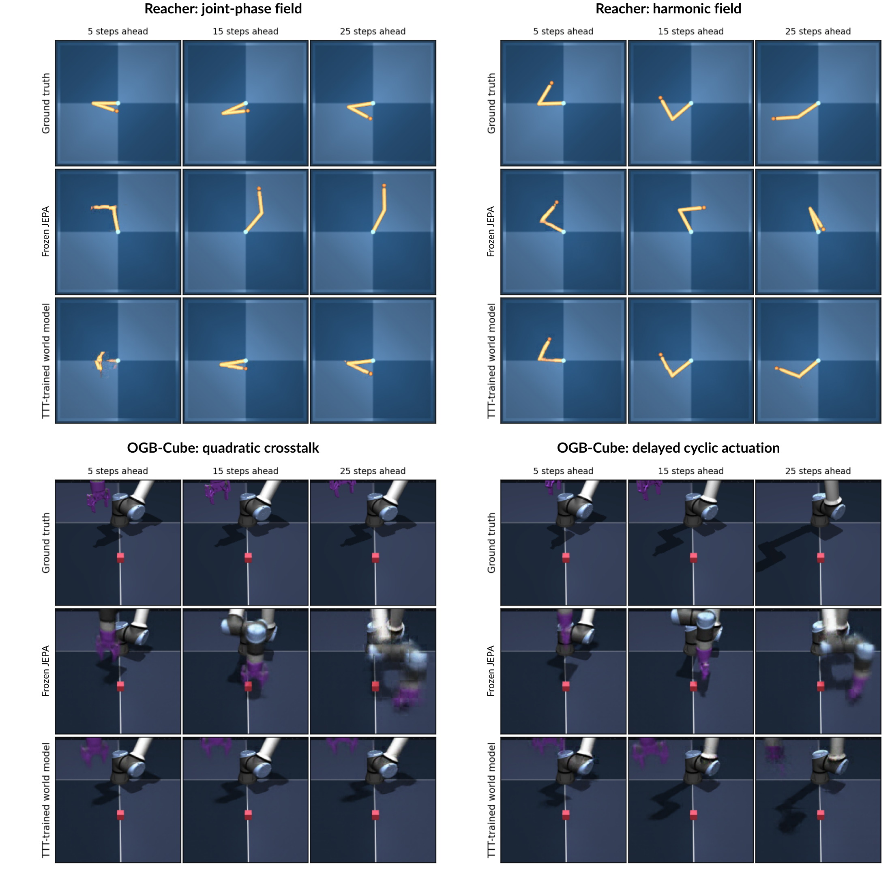

Abstract
World models enable agents to plan by predicting future states of the environment, but their predictions can become unreliable when test-time dynamics differ from those seen during training. We present JEPA-TTT, which adapts the latent dynamics predictor of a pretrained action-conditioned Joint-Embedding Predictive Architecture world model throughout test time. Self-supervised updates accumulate across episodes, while the visual encoder and reward head remain fixed, preserving the pretrained representation and task objective. Planning requires neither a goal image nor online environment reward. JEPA-TTT uses dense replay, which forms prediction windows at every temporal offset, retains them in a growing buffer, and samples minibatches from that buffer for predictor updates. Across eight dynamics shifts in four continuous-control environments, JEPA-TTT improves planning on every shift. After 500 test-time episodes, it reduces autoregressive latent prediction error by 83% on average and improves planning performance by 153% over the frozen JEPA world model. These results show that persistent self-supervised test-time training can adapt a pretrained latent world model under changed dynamics.
Persistent Test-Time Training
When dynamics change, the same action can produce a different outcome. A frozen world model can then rank candidate plans incorrectly. JEPA-TTT uses the agent’s own observations and executed actions to adapt the predictor throughout deployment.

- Plan and act. Cross-Entropy Method (CEM) planning rolls candidate actions forward in latent space and scores them with an offline-trained, frozen reward head. Execute the first action block, observe the result, and replan.
- Learn from dense replay. Form prediction windows at every valid temporal offset and store them in a growing buffer. Sample minibatches and update the predictor to match the frozen encoder’s representations of observed states.
- Carry adaptation forward. Retain the predictor parameters, optimizer state, and replay buffer across episode boundaries. At most one predictor update is performed per replanning step when a full minibatch is available.
Only the dynamics predictor is adapted. Keeping the visual encoder and reward head frozen preserves both the representation space and the task objective. Reward labels are used to train the reward head offline; environment rewards are not observed during test-time training or planning.
Eight Dynamics Shifts, Four Environments
We evaluate two controlled dynamics shifts in each of PushT, Two-Room, Reacher, and OGBench-Cube. Each deployment has one dynamics change that remains fixed for 500 test-time episodes. The observation mapping, task score, action space, and episode horizon stay unchanged.

| Environment | Dynamics shifts |
|---|---|
| PushT | Rotate the agent’s action by 90°, or rotate only the block’s contact-induced motion by 90°. |
| Two-Room | Rotate actions according to a spatial wave field or a two-dimensional grid field. |
| Reacher | Rotate motor commands using a joint-phase field or a harmonic field that depends on joint configuration. |
| OGBench-Cube | Add nonlinear cross-axis coupling, or delay the command by one step and route it cyclically across axes. |
Each world model is pretrained on 3,000 episodes under the training dynamics. During deployment, we evaluate every 50 episodes on the same 100 held-out episodes, with three deployment runs per shift. Held-out evaluation trajectories never enter the adaptation buffer.
Planning Improves on Every Shift
JEPA-TTT outperforms Frozen JEPA, PPO-TTT, and the adapted AdaJEPA baseline on all eight shifts for both reported planning metrics. Averaged across shifts, the best held-out score improves by 153% and the normalized planning-score AUC improves by 113% over Frozen JEPA.

| Method | Best score | Mean AUC | Online environment rewards |
|---|---|---|---|
| Frozen JEPA | 0.267 | 0.267 | No |
| PPO-TTT | 0.307 | 0.279 | Yes (oracle rewards) |
| AdaJEPA | 0.297 | 0.297 | No |
| JEPA-TTT | 0.678 | 0.571 | No |
Reading the metrics. Best score is the maximum three-run mean over evaluations at episodes 50, 100, …, 500. Mean AUC is the area under the held-out score curve from episode 0 to 500, divided by 500 and averaged over runs. It measures performance throughout adaptation.
Controlled comparisons. Frozen JEPA and AdaJEPA use the same pretrained world model, frozen reward head, and CEM planner as JEPA-TTT. AdaJEPA is adapted to this goal-image-free setting and resets its adaptation each episode. PPO-TTT receives online environment rewards during its 500-episode adaptation.
View planning curves over all 500 episodes

More Accurate Dynamics, Better Plans
After 500 test-time episodes, JEPA-TTT reduces five-block autoregressive latent prediction MSE by 83% on average. Error decreases on every shift when the frozen and adapted models receive identical held-out trajectories, observed context, and future actions.


View decoded predictions before and after adaptation


Ablation Studies
We study how dense replay and retaining adaptation across episodes contribute to planning under dynamics shifts.
Dense Replay
Controlled comparisons separate additional optimization, temporal coverage, and replay. Dense temporal windows improve aggregate planning performance. Replay provides a small additional benefit over the dense stream, raising mean best score from 0.671 to 0.678 and mean AUC from 0.548 to 0.571 under the same cumulative update budget.
| Shift | Metric | Sparse stream | Compute-matched sparse stream | Dense stream | Dense replay (JEPA-TTT) |
|---|---|---|---|---|---|
| PushT: action rotation | Best | 0.253 ± 0.063 | 0.236 ± 0.049 | 0.511 ± 0.009 | 0.490 ± 0.022 |
| AUC | 0.169 ± 0.007 | 0.169 ± 0.021 | 0.359 ± 0.044 | 0.378 ± 0.022 | |
| PushT: contact rotation | Best | 0.317 ± 0.258 | 0.521 ± 0.319 | 0.646 ± 0.044 | 0.619 ± 0.033 |
| AUC | 0.205 ± 0.082 | 0.320 ± 0.157 | 0.490 ± 0.041 | 0.555 ± 0.028 | |
| Two-Room: spatial wave | Best | 0.505 ± 0.031 | 0.790 ± 0.002 | 0.797 ± 0.002 | 0.799 ± 0.002 |
| AUC | 0.427 ± 0.034 | 0.672 ± 0.020 | 0.697 ± 0.012 | 0.728 ± 0.012 | |
| Two-Room: grid rotation | Best | 0.786 ± 0.004 | 0.794 ± 0.003 | 0.782 ± 0.000 | 0.799 ± 0.003 |
| AUC | 0.662 ± 0.009 | 0.717 ± 0.026 | 0.686 ± 0.020 | 0.725 ± 0.019 | |
| Reacher: joint phase | Best | 0.557 ± 0.025 | 0.768 ± 0.062 | 0.725 ± 0.018 | 0.758 ± 0.012 |
| AUC | 0.401 ± 0.007 | 0.545 ± 0.051 | 0.593 ± 0.013 | 0.619 ± 0.019 | |
| Reacher: harmonic | Best | 0.446 ± 0.046 | 0.588 ± 0.048 | 0.610 ± 0.039 | 0.688 ± 0.075 |
| AUC | 0.398 ± 0.007 | 0.488 ± 0.014 | 0.492 ± 0.006 | 0.518 ± 0.012 | |
| OGB-Cube: quadratic | Best | 0.520 ± 0.053 | 0.652 ± 0.010 | 0.653 ± 0.004 | 0.628 ± 0.020 |
| AUC | 0.390 ± 0.005 | 0.528 ± 0.015 | 0.528 ± 0.013 | 0.530 ± 0.009 | |
| OGB-Cube: delayed cyclic | Best | 0.591 ± 0.044 | 0.646 ± 0.006 | 0.646 ± 0.004 | 0.643 ± 0.003 |
| AUC | 0.290 ± 0.022 | 0.522 ± 0.006 | 0.542 ± 0.006 | 0.513 ± 0.009 | |
| Mean | Best | 0.497 ± 0.028 | 0.625 ± 0.025 | 0.671 ± 0.008 | 0.678 ± 0.013 |
| AUC | 0.368 ± 0.007 | 0.495 ± 0.025 | 0.548 ± 0.007 | 0.571 ± 0.004 |
Entries show means ± standard deviations over three runs. The Mean rows summarize run-level averages across the eight shifts; bold values mark the highest unrounded mean for each metric.
Sparse windows begin at action-block boundaries; dense windows begin at every environment step. Compute-matched sparse streaming repeats sparse windows to match the dense presentation budget. Dense replay samples from the accumulated dense windows under the same cumulative update budget as the dense stream.
Persistent Test-Time Training
Retaining the predictor and optimizer state across episodes increases mean best score from 0.289 to 0.729 and mean AUC from 0.273 to 0.637, compared with resetting adaptation at every episode boundary. Persistence improves both metrics on all eight shifts.
This matched control uses episode-local dense windows, a batch size of 8, and the same number of predictor updates in both variants. It is separate from the main dense replay protocol.
Scope. The study evaluates a single persistent dynamics shift. Simultaneous visual or reward changes, sequences of dynamics changes, and forgetting of previously learned dynamics remain outside the evaluation.
Citation
If you find this work useful, please cite it using the BibTeX entry below.
@article{zhang2026jepattt,
title = {{JEPA-TTT}: Persistent Test-Time Training of Latent World Models
for Planning under Dynamics Shifts},
author = {Zhang, Zheyuan and Ye, Suyu and Agarwal, Nakul and
Mahjoub, Hossein Nourkhiz and Pari, Ehsan Moradi and
Khashabi, Daniel and Shu, Tianmin and Tadiparthi, Vaishnav},
journal = {NeurIPS 2026 Workshop on World Models in Physical AI},
year = {2026},
eprint = {2610.00722},
archivePrefix = {arXiv},
primaryClass = {cs.LG},
url = {https://arxiv.org/abs/2610.00722}
}